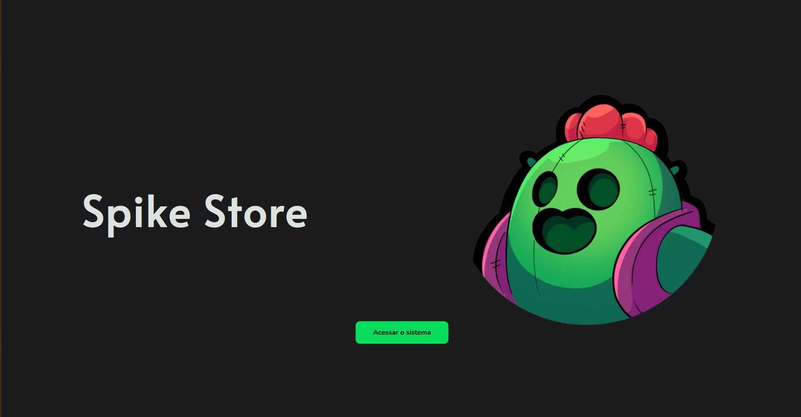
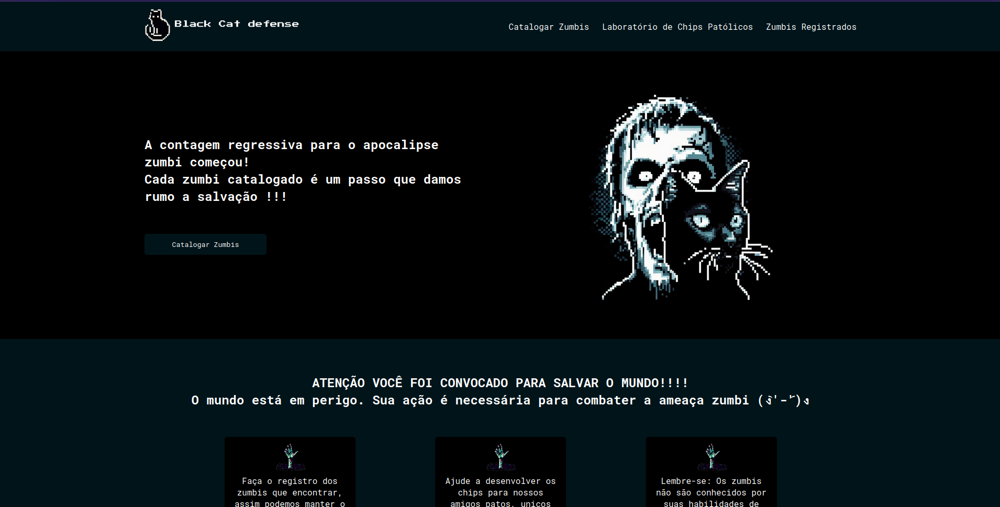
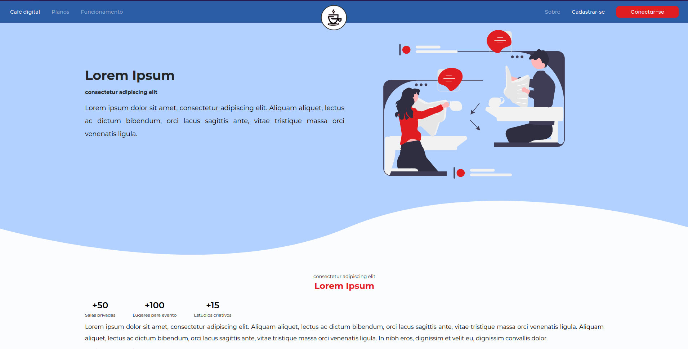
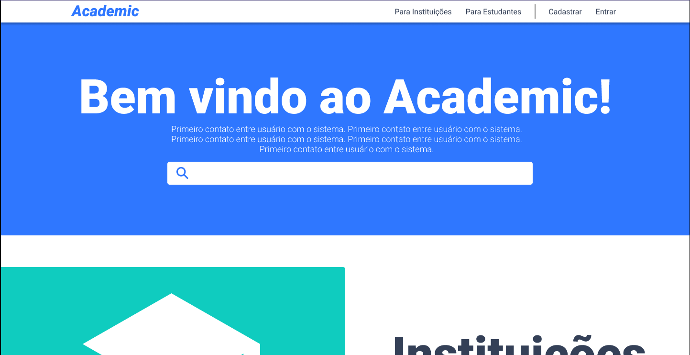
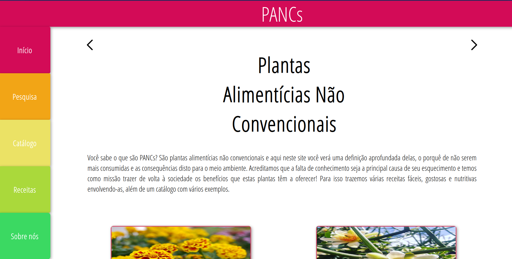
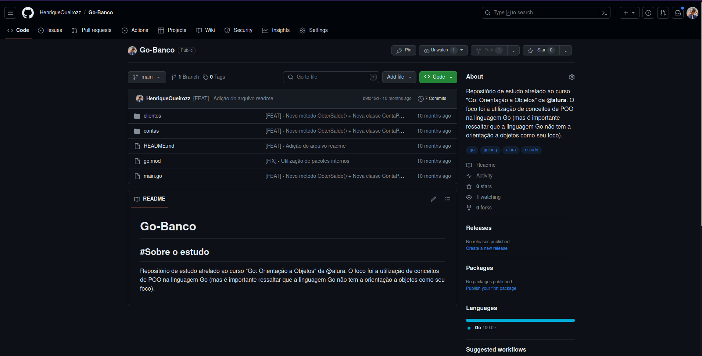
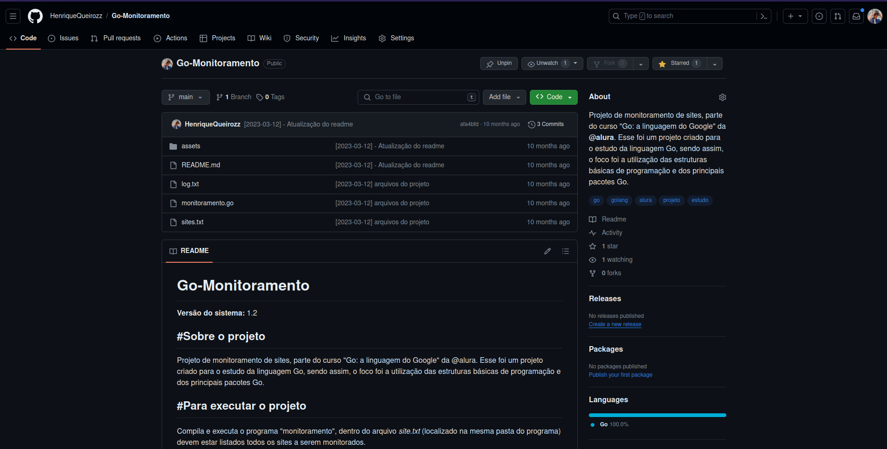
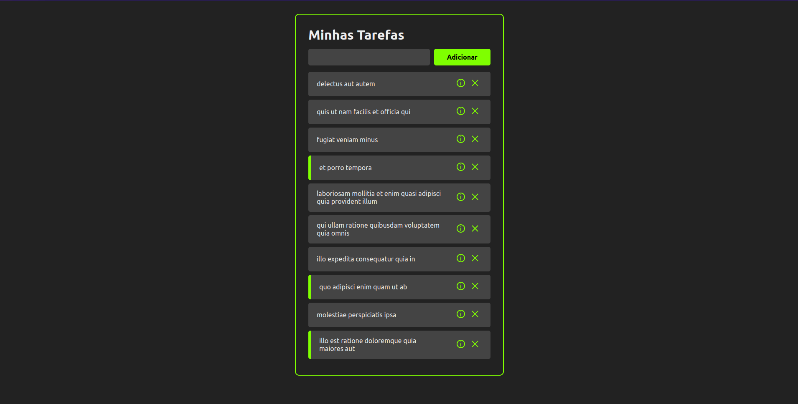

Henrique Queiroz de Paula_

Sobre mim
Faça queimar...
Você já teve um sonho? Um daqueles bem loucos, que só de pensar enchem o coração, enchem nossas mentes e transbordam até os nossos olhos com um brilho intenso, capaz de iluminar qualquer escuridão!!
Prazer em te conhecer, eu sou o Henrique e sou um desenvolvedor de sistemas, apaixonado por competições de programação e estudar sobre a área, a partir daqui você poderá conhecer um pouquinho de mim, projetos dos quais participei e trabalhos que estou desenvolvendo.
Caso queira conversar mais profundamente sobre algum assunto ou tema, sinta-se a vontade para entrar em contato através das minhas redes.
Desenvolvedor Web
Faça queimar
Participo de campeonatos desde de o ensino médio, cada vez adquirindo mais e mais gosto, atualmente o foco esta em alcançar bons resultados no Interfatecs e na SBC (Sociedade Brasileira de Computação).
Programação competitiva
Faça queimar
Participo de campeonatos desde de o ensino médio, cada vez adquirindo mais e mais gosto, atualmente o foco esta em alcançar bons resultados no Interfatecs e na SBC (Sociedade Brasileira de Computação).








Spike store
PHPLaravelMySQL
A "Spike Store" é um projeto criado como parte de um teste técnico de desenvolvimento de software<, o objetivo era o desenvolvimento de uma plataforma para cadastro de vendedores e suas respectivas vendas, o desafio explorou tecnologias como PHP e MySQL, exigindo funcionalidade como um CRUD (Create, Read, Update e Delete) de informações, assim como agendamento de rotinas.
Ver mais